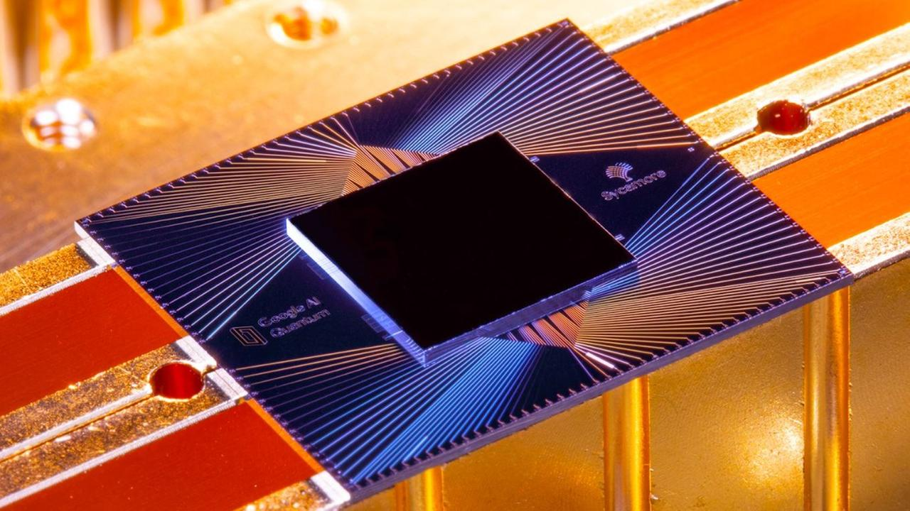

Quantum Computers
What is a Quantum Computer?
A quantum computer is a type of computer that uses quantum bits (qubits), which can exist in multiple states at once through superposition and become linked through entanglement, allowing it to solve certain problems much faster than classical computers. Their processing power allows them to run processes parallel to one another, unlike classical computers, which work sequentially. While they are both called computers, quantum computers are not meant to replace traditional computers completly, but are rather meant as an accelerator for certain types of calucations that a typical computer would be too slow for.

Text on the right here
Text after